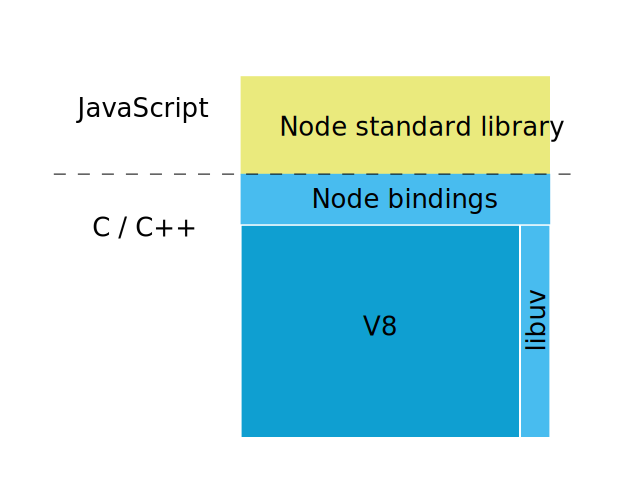

Node.js Basics
Node.js is just a javascript interpreter with a very small library added. With node you build your web server from scratch.
After working through this guide you should
- know how to install libraries for node.js with npm
- be able to write a simple web server
1 What is node.js?
Node.js was originally written by Ryan Dahl in 2009 as a combination of two pieces of software that already existed:
- the google javascript interpreter v8
- a library for asyncronous programming
To this he added a library written in Javascript. In 2010 npm was added as a package manager for Javascript Libraries.
In 2017, according to openhub the node projects consist of:
- v8: 2 millions lines of code written in c++
- libuv: 50.000 lines of C code
- node bindings: 450.000 lines of C code
- the node library: 1 million lines of Javascript code
So v8 is the biggest part of node:

2 Hello World
You write your program in Javascript:
console.log("Hello World");
and run it with the node command:
$ node hello.js Hello World
You can also use node interactively:
$ node
> console.log("Hello World");
Hello World
undefined
> 1+2
3
> [CTRL]-[D]
3 Node Version Manager
Node Versions change fast. The node version manager (nvm) makes it easy to switch between versions:
$ nvm use 6.10 Now using node v6.10.3 (npm v3.10.10) $ nvm use default Now using node v7.9.0 (npm v4.2.0)
4 Hello Web
const http = require('http');
const hostname = '127.0.0.1';
const port = 3000;
const server = http.createServer((req, res) => {
res.statusCode = 200;
res.setHeader('Content-Type', 'text/plain');
res.end('Hello World\n');
});
server.listen(port, hostname, () => {
console.log(`Server running at http://${hostname}:${port}/`);
});
$ node app.js Server running at http://127.0.0.1:3000/
5 Packages
Node does not use ES6 modules! node packages are installed by npm into a folder node_modules. You can also write your own:
// File foo.js:
const http = require('http');
const app = { hello: 'World' };
exports = module.exports = app;
Other file:
const app = require('./foo');
console.log(app);
$ node bar.js
{ hello: 'World' }
6 The javascript Event Loop
You have worked with Javascript and asyncronous programming before.
function f() {
console.log("foo");
setTimeout(g, 0);
console.log("baz");
h();
}
function g() {
console.log("bar");
}
function h() {
console.log("blix");
}
el.addEventListener('click',f);
If this code runs in the browser, the output on the console will be:
- foo
- baz
- blix
- bar
7 Processing Model
PHP and Ruby on Rails have the same basic processing model. It is either implemented with threads or with processes.
- when the webserver first starts, a number of threads are started
- when a http comes in, it is handled by one thread from beginning to end
- the thread will probably spend some time waiting for slow I/O, like a database response
Using syncronous I/O the program code will look something like this:
file = File.open(file_name, "r") # takes a long time, thread has to wait data = file.read # takes a very long time, thread has to wait file.close
As each thread comes with a fixed overhead of memory demand, you can only start so many threads on a given machine. You configure this in the web server configuration, e.g.
- when running PHP with apache and PHP-FPM with the configuration directives
pm.max_children, ``pm.start_servers,pm.min_spare_servers,pm.max_spare_servers, see php.net - when running Rails with Passenger with the configuration directives
PassengerMinInstancesundPassengerMaxPoolSize, see phusionpassenger.com
Node has a completely different model:
- there is one thread running the javascript event loop
- if the thread is free, it picks up the next event from the event queue. this might be a new http request
- all I/O is done asynchronosly: the main thread hands off the request to the database to a new, separate thread from a thread pool. When the request is done, and the data is available, this is added as a new event to the event queue
- after starting an asynchronos thread, the main thread immediately contious working
Doing asyncronous I/O is implemented using callbacks in Javascript, and will look something like this:
console.log('first');
fs.readFile(file_name, (err, data) => {
if (err) throw err;
console.log('... much later, third')
console.log(data);
});
console.log('second');
If this is the whole program, the main thread will become free after
printing out second. It will pick up something else to do from
the event queue. Much later, when the data from the file has been
loaded, it will find the callback funktion on the event queue, and
finally reach third.


9 IO-bound vs. CPU-bound
Describes two kinds of performance bottlenecks
- An I/O-bound application waits most of the time for network, filesystem and database. Running on a faster CPU would not help.
- A CPU-bound application spends most of the time using the CPU, running on a faster CPU would help.
The node process model helps with I/O-bound applications: If your app is I/O-bound, the event loop will be able to serve many requests, while other threads handling the acutal I/O will run on other kernels
If one aspect of your app is CPU-bound it will monopolize that kernel, (other) requests cannot be served. Therefore node and is not well suited for CPU bound applications.
10 Writing asyncronous code
A Node app by necessety contains a lot of asyncronous code. The traditional way of writing it, is the "callback" style:
fs = require('fs');
console.log('first');
fs.readFile(file_name, "utf8", (err, data) => {
if (err) throw err;
console.log('... much later, third')
console.log(data);
});
console.log('second');
This leads to "callback hell", when callbacks have to be nested deepply, and the order of the code lines is in no way connected with the order they are executed in.
There have been several attempts to find a more readable alternative:
- Fibers
- Generators
- Reactive Programming (Bacon)
- Promises
- Async functions (soon)
The last two optinos seem to be the winners (in 2017): promises
are a part of ES6, and are available in both browsers and node now.
In node you can use a "promisified" version of the node standard library
with mz:
fs = require('mz/fs');
console.log('1.');
fs.readFile('this.txt', "utf8").then( (data) => {
console.log('... much later: 3.')
console.log(data);
}).catch( (err) => {
console.log('in case of an error: 3.');
throw err;
}) ;
console.log('2.');
Async functions are defined in ES8 and are usable in browsers, but not in node yet. There Syntax will be something like:
const fs = require('mz/fs');
console.log('1.');
async function read_text(file_name) {
data = await fs.readFile('this.txt', "utf8");
return data;
}
console.log( read_text('this.txt') );
11 Streams
Read the file. After the whole file has been read, send it:
var http = require('http');
var fs = require('fs');
var server = http.createServer(function (req, res) {
fs.readFile(__dirname + '/data.txt', function (err, data) {
res.end(data);
});
});
server.listen(8000);
Better: connect a stream reading the file to the stream that is the HTTP response:
var http = require('http');
var fs = require('fs');
var server = http.createServer(function (req, res) {
let stream = fs.createReadStream(__dirname + '/data.txt');
stream.pipe(res);
});
server.listen(8000);
.pipe() takes care of listening for 'data' and 'end' events from the fs.createReadStream(). This code is not only cleaner, but now the data.txt file will be written to clients one chunk at a time immediately as they are received from the disk.
Using .pipe() has other benefits too, like handling backpressure automatically so that node won't buffer chunks into memory needlessly when the remote client is on a really slow or high-latency connection.
From the stream handbook